Quick Start
This guide will show you how to create a Rewired Input Manager and set up basic input for a 1-player game.
1. Install Rewired. Refer to Installation for more information.
2. Create a Rewired Input Manager in the scene from the menu:
Window -> Rewired -> Create -> Input Manager.
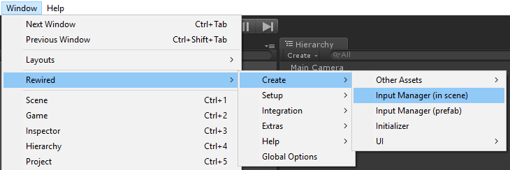
3. Select the Rewired Input Manager from the scene Hierarchy.
4. In the Inspector, click "Launch Rewired Editor." (See Rewired Editor for detailed usage information.)
5. In the navigation bar at the top of the Rewired Editor window, click "Players".
6. You must have at least one Player to use input. Add a new Player by clicking the "New" button below the Players box.
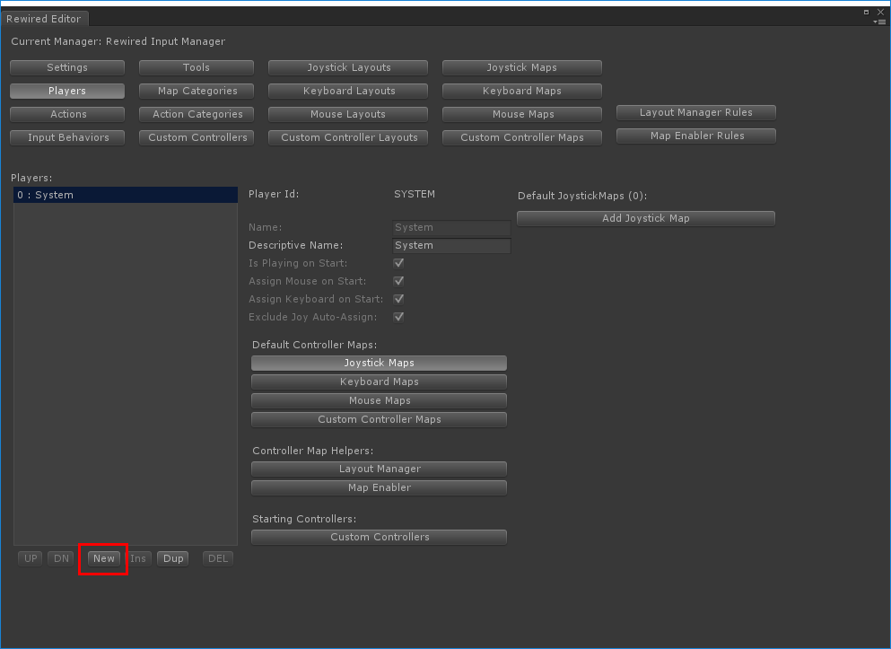
7. We will come back to Players later to assign controller maps, but first you need to create some Actions. Click the "Actions" button in the navigation bar and create a new Action by clicking the "New" button below the Actions box.
8. For each input you will need for your game, create one Action. Create a few actions such as pictured in the example below. The selected Action's properties can be edited in the fields to the right under "Properties." For movement actions, change the Type to "Axis". You can give each action a Name, a Descriptive Name, and if the Type is Axis, also give it a Positive Name and a Negative Name. Hover the mouse over each property label to see a description of that property.
Note: Actions can be categorized by first creating Action Categories (or later moved into categories), but to keep this example simple, we will just leave all actions in the Default category.
9. Each Action can be assigned an Input Behavior which determines how keyboard keys, buttons, and mouse axes behave. By default, all actions are assigned the "Default" Input Behavior. If you wish to tweak any of the settings or create new Input Behaviors, click the "Input Behaviors" button in the navigation bar. Hover the mouse over each property label for a description. For this guide's purposes, we will just leave the default behavior as is.
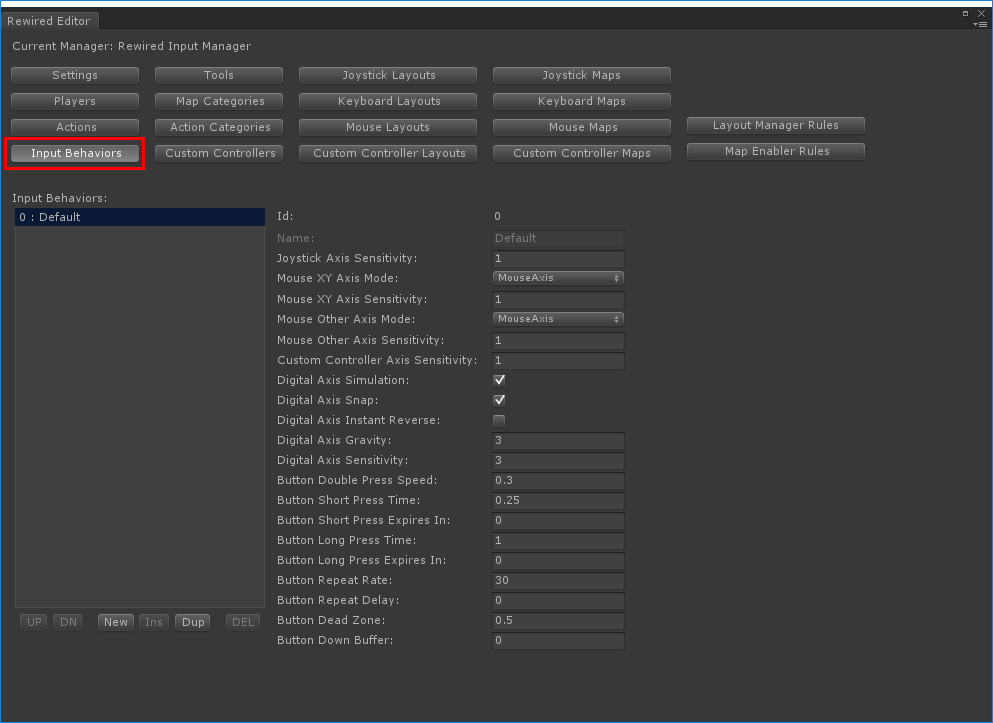
10. Now let's create a Joystick map. Click "Joystick Maps" in the navigation bar.
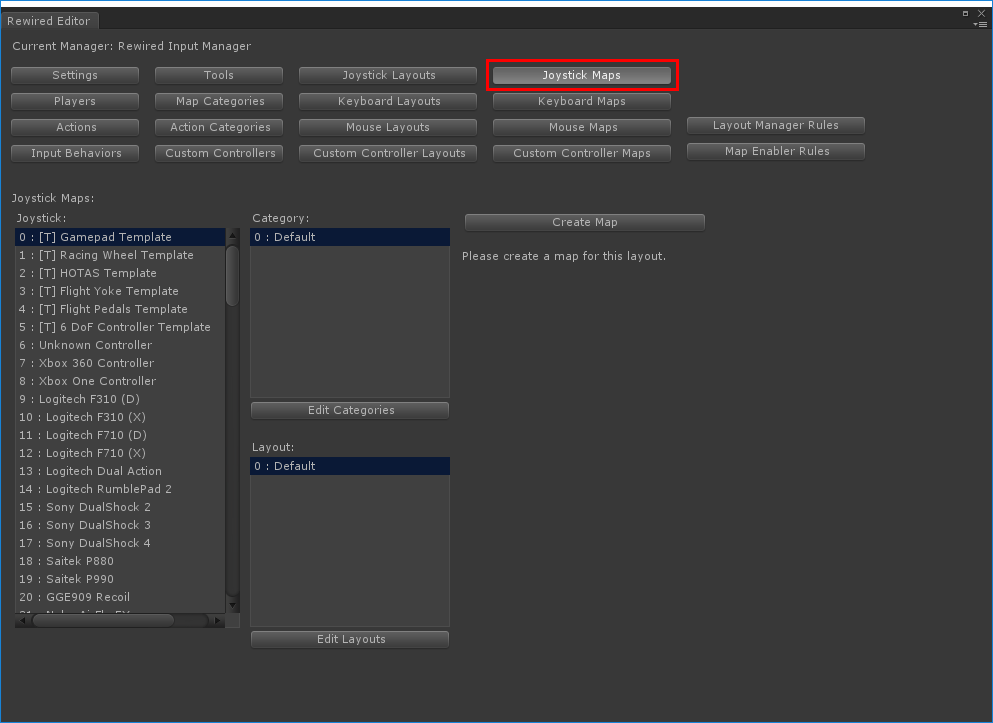
11. You can create maps for any of the fully-supported controllers individually, or to save time, just create a map for the Dual Analog Gamepad template and all controllers that use that template will automatically have maps created for them. (Any Joystick preceeded by [T] is a template.) Select the "[T] Dual Analog Gamepad" template, then click "Create Map."
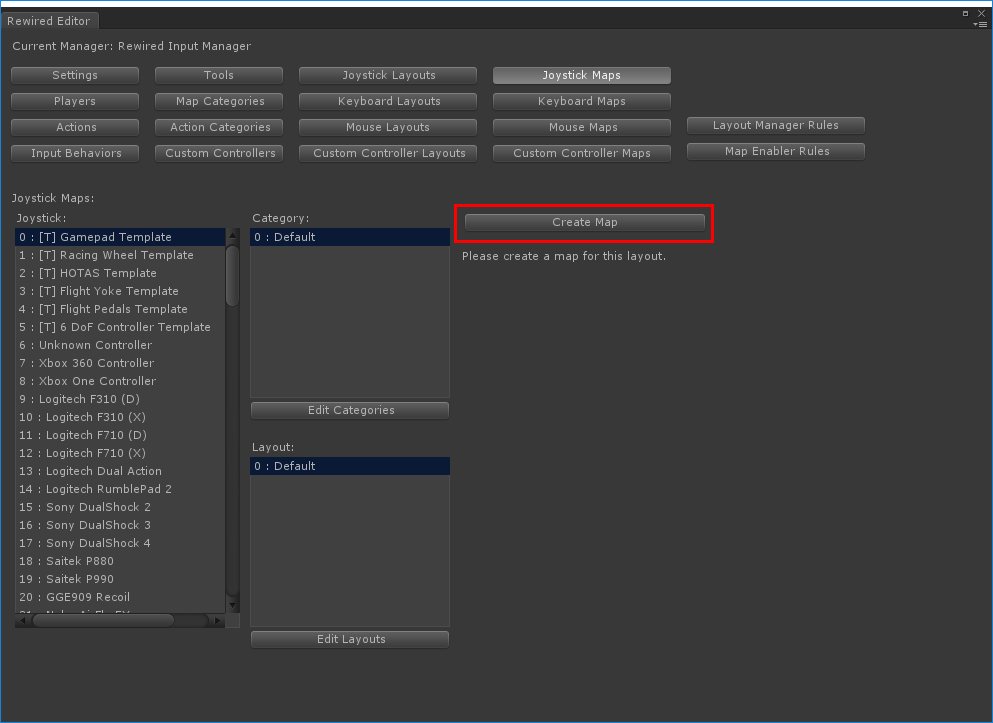
12. Now you will need to create elements and assign actions to them. Click "New" under the "Element" box to create an element. Element Properties will appear to the right for the selected element. Assign a joystick element by clicking the drop-down "Element." Select an action to assign to this element under "Action." Create an element for each Action you created in step 8 and assign one Action to each element.
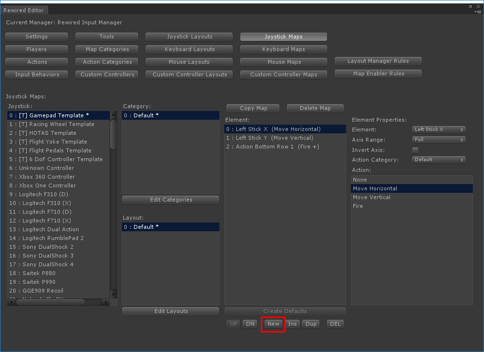
13. Now we will do the same thing, only this time for the keyboard. Click "Keyboard Maps" in the nagivation bar, create a map by clicking "Create Map", then create some elements by clicking the "New" button below the "Element" box. Assign actions to each element as you did with the Joystick map above. For movement actions that use an axis, since a keyboard key acts like a button and not an axis, you will use the "Axis Contribution" setting to determine whether the key contributes a positive or negative value to the final axis. For example, if the "W" key should move the character up, the Action should be set to "Move Vertical" and the "Axis Contribution" should be "Positive". For the "S" key which should move the character down, the Action should also be "Move Vertical", but the "Axis Contribution" should be "Negative."
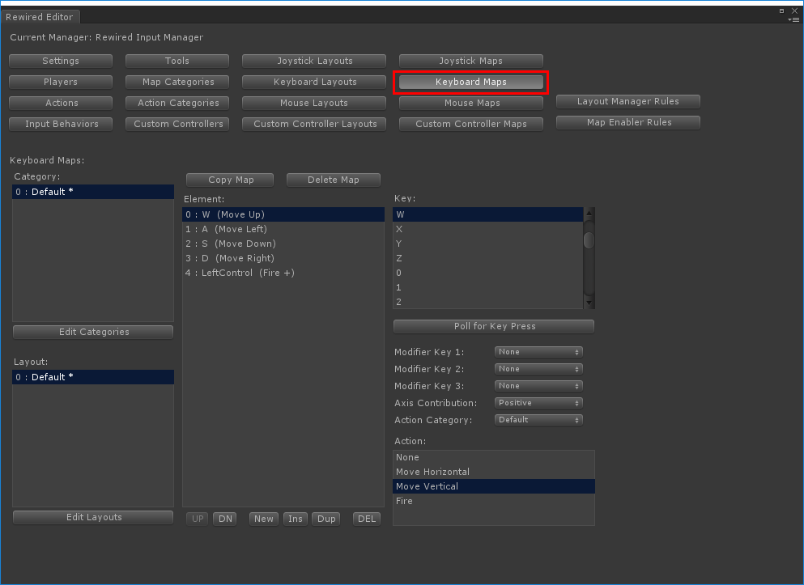
14. If you want to create a Mouse Map, repeat the same steps as above for keyboard and joystick, but this time click "Mouse Maps" in the navigation bar.
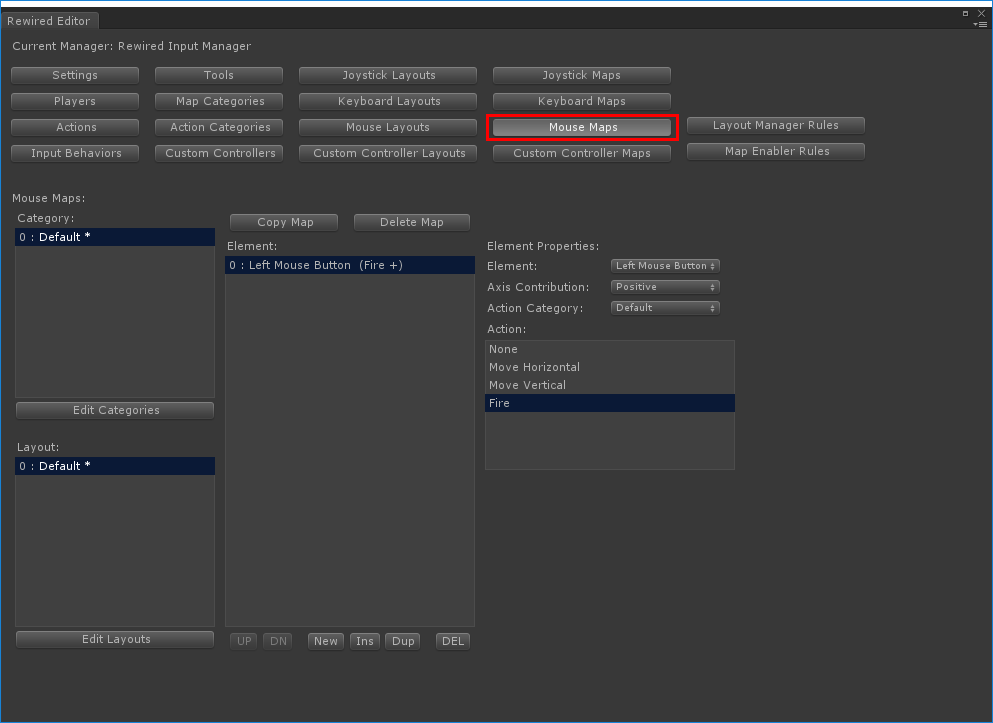
15. Now that we have created joystick, mouse, and keyboard maps, we need to assign them to the Player. Click back to the "Players" page in the navigation bar and select the Player to which you want to assign the maps.
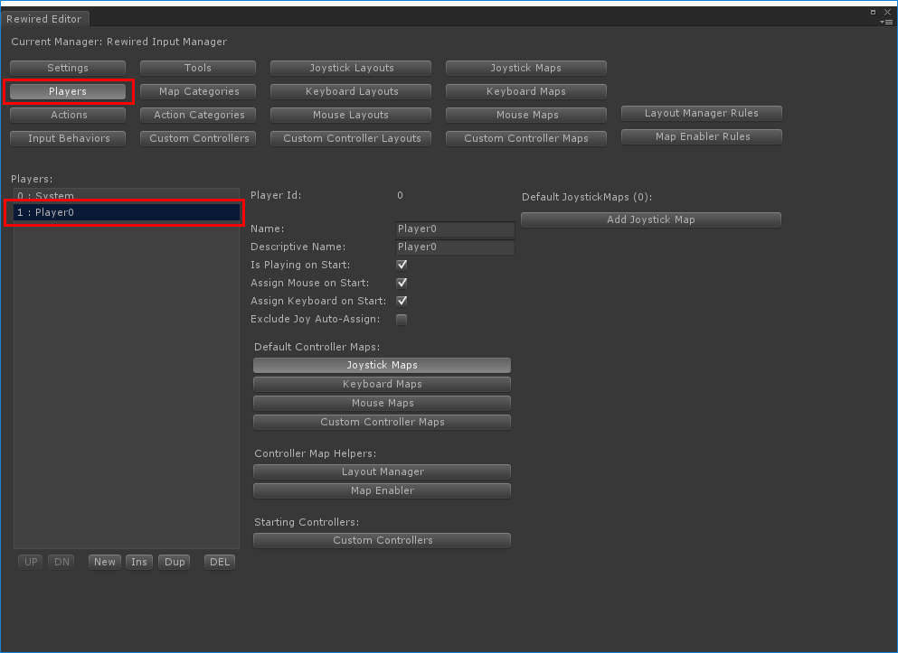
16. Assign a joystick map to the player by clicking the "Add Joystick Map" button. If you have more than one joystick map to assign, you can add as many as you need. For this demo, just add the map you created above. To choose a different joystick map, change the Category and Layout drop-downs. Ensure "Start Enabled" is checked so this joystick map will be active by default. When gameplay begins, if any joysticks are assigned to this Player, it will load the proper map for that joystick.
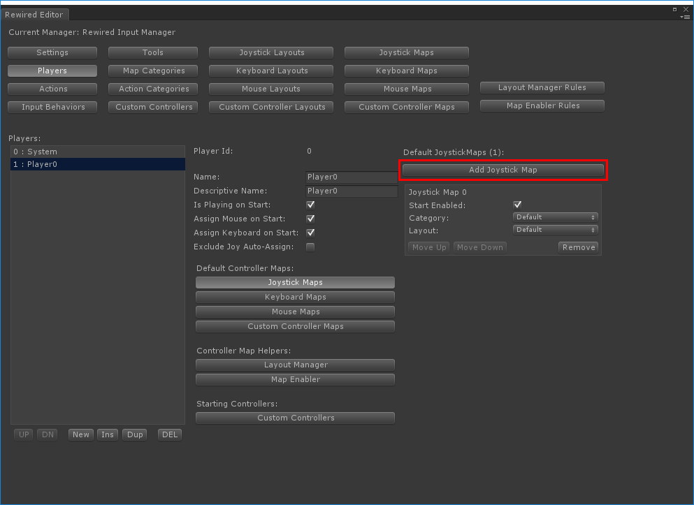
17. Do the same for any keyboard maps you have created. Note: For keyboard control, ensure the "Assign Keyboard on Start" checkbox is checked, otherwise the Player will not be assigned the keyboard unless you assign it manually through scripting.
18. Do the same for mouse maps. Note: For mouse control, ensure the "Assign Mouse on Start" checkbox is checked, otherwise the Player will not be assigned the mouse unless you assign it manually through scripting.
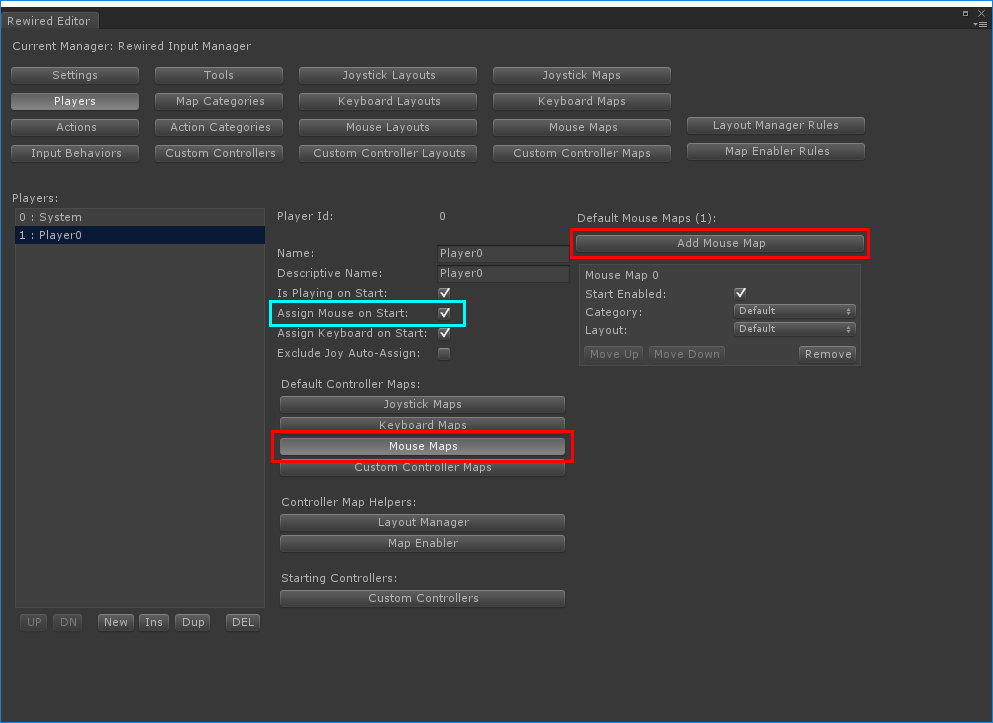
19. Close the Rewired Editor and save the scene.
20. Now you will need to create a script to process input for your character. Since the script could vary significantly based on the type of game you're making, this example will just show the basics of how to get input from Rewired. This example is not meant for use in an actual game.
21. Create a new script in your project, for example, MyCharacter.cs, and attach the script to your character game object.
// MyCharacter.cs - A simple example showing how to get input from Rewired.Player
using UnityEngine;
using System.Collections;
using Rewired;
[RequireComponent(typeof(CharacterController))]
public class MyCharacter : MonoBehaviour {
public int playerId = 0; // The Rewired player id of this character
public float moveSpeed = 3.0f;
public float bulletSpeed = 15.0f;
public GameObject bulletPrefab;
private Player player; // The Rewired Player
private CharacterController cc;
private Vector3 moveVector;
private bool fire;
void Awake() {
// Get the Rewired Player object for this player and keep it for the duration of the character's lifetime
player = ReInput.players.GetPlayer(playerId);
// Get the character controller
cc = GetComponent<CharacterController>();
}
void Update () {
GetInput();
ProcessInput();
}
private void GetInput() {
// Get the input from the Rewired Player. All controllers that the Player owns will contribute, so it doesn't matter
// whether the input is coming from a joystick, the keyboard, mouse, or a custom controller.
moveVector.x = player.GetAxis("Move Horizontal"); // get input by name or action id
moveVector.y = player.GetAxis("Move Vertical");
fire = player.GetButtonDown("Fire");
}
private void ProcessInput() {
// Process movement
if(moveVector.x != 0.0f || moveVector.y != 0.0f) {
cc.Move(moveVector * moveSpeed * Time.deltaTime);
}
// Process fire
if(fire) {
GameObject bullet = (GameObject)Instantiate(bulletPrefab, transform.position + transform.right, transform.rotation);
bullet.rigidbody.AddForce(transform.right * bulletSpeed, ForceMode.VelocityChange);
}
}
}
22. That's it! You've leared how to set up basic input for a single player game using Rewired. There's a whole lot more powerful features available in Rewired, so be sure to read the rest of the documentation for more advanced topics.